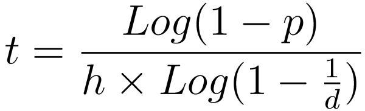

NERVA Mining FAQ
Here we aim to address some of the most commonly asked questions about mining.
What is Mining?
Mining is the process by which transactions are validated on the blockchain. If you're new to (proof-of-work) cryptocurrencies and haven't grasped the basics of mining, that is beyond the scope of this document and there are many learning resources elsewhere. Basically though, miners compete to win a reward of XNV (consisting of the block reward, and transaction fees from any transactions in that block) by solving complex equations.
Most blockchains are mainly mined by large GPU pools or ASIC mining farms. In the case of NERVA, anybody with a computer can mine, and this is a guiding principle of the project.
How do I start mining?
Refer to the CLI Guide or GUI Guide according to which you are using.
How do I see my hashrate?
In the GUI, your hashrate is shown visually. In the CLI you can use the status command. You can also use the show_hr and hide_hr commands to toggle between a constant output of your current hashrate.
How will I know if I find a block?
A message will be displayed in the daemon along the lines of Found block at height: xxxxxx.
If you have your wallet open, you will also see the block reward as an incoming transaction.
What is the current block reward?
Refer to the block explorer to see the current block reward.
Understanding threads
A thread is simply a virtual representation of a CPU core. Modern CPU's have 2-8+ cores, with some very high end models packing 32 or more cores. Most modern CPU's also feature Simultaneous Multithreading (SMT), also known as HyperThreading, which allows for multiple threads per core.
Basically, if you have a quad core CPU, it will have either 4 or 8 threads depending on whether it supports SMT. You can easily check how many threads you have by looking up your CPU model.
So, you should mine on all the threads, right? Probably not. Not only will it slow down anything else you try to do on the computer while mining, but it will often result in a suboptimal hashrate as well due to other hardware bottlenecks. You should experiment to find what works best for your hardware configuration.
Can I really mine on any CPU?
Yes, with a few caveats. The official NERVA binaries require support for the AES-NI instruction set. Practically all modern CPU's support this instruction set, but older (5+ years) models may not. It's possible to build NERVA to work without AES support, but mining isn't practical on CPU without it. For this reason it isn't officially supported.
As for whether it is practical to mine on a given CPU, this will vary depending on your hardware configuration. Your CPU should be reasonably modern to be competitive. It is beneficial to have a large amount of cores and cache, and memory frequency will impact your hashrate as well, amongst other things. Some NERVA CPU benchmarks are available on Forkmaps (collected by JerMe404), as well as in the #benchmarks channel in Discord (search for yours or a similar CPU model). These resources should allow you to get an idea of what hashrate to expect, and thereby decide whether mining is worth it for you.
What about 32-bit (i386) systems?
It's possible to build 32-bit binaries yourself, but these are not officially provided or supported. 32-bit operating systems are no longer mainstream and you probably shouldn't be using one.
What about non-x86 platforms?
NERVA previously had an official build for Android (with mining support) but it was discontinued due to limited use and practicality. Again, you're welcome to attempt to build the software for other platforms, but it isn't an official focus at this time. (However, a mobile wallet for both Android and iOS is in development and nearing completion).
Can I mine NERVA at the same time as GPU-mining another coin?
Definitely! Mining NERVA is actually great way to boost the efficiency and profitability of your GPU mining rig - its CPU is mostly idle, and the electricity cost of an increased load to the CPU is negligible compared to the power consumption of your GPU(s). Depending on the requirements of the GPU mining software you're using, it may be best to leave one or more threads free for it, while mining NERVA on the remaining theads.
Can I mine on a VPS / cloud server?
Yes, but be aware that mining may be against the ToS of some providers.
Probability of finding a block
For a quick answer, you can reference Freeboard which has a live estimate of how long it will take to find a block with a hashrate of 1000H/s (simply divide/multiply this figure according to your actual hashrate). If using the GUI to mine, it also will provide an estimate based on the same mathematics.
The amount of time needed to have a certain probability of finding a block can be calculated through this formula:

t= time in secondsp= probability (eg 0.95 for 95% probability)h= your hashrated= difficulty.
This is only theoretical and real world outcomes will vary. In practice, it is quite common to find a number of blocks in quick succession and then not find a block for an extended period of time. Luck plays a significant role in a short timeframe, but has less and less weight the longer and more consistently you are mining for.
I was finding blocks before but not anymore, is something wrong?
This is a very common question and almost always just bad luck. Unless there is an error message or your hashrate has dropped (or network difficulty has risen significantly) you just need to wait. Things will average out and you will start finding blocks again.
Does my chance of finding a block increase over time?
All else being equal (ie if the network difficulty and your hashrate have not changed), no. You have the same likelihood each block, of finding that block. There is no advantage from having mined longer than someone else.
- Last updated:
-
Contributors